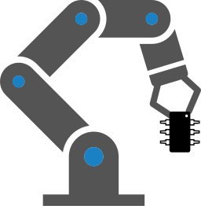

×
PCB
docs
drc
diff_pcb
kiri
pcbdraw_svg
pcbdraw_png
pcbdraw_svg_bottom
pcbdraw_png_bottom
fabrication
drill
write_gerber_drill
gerber
write_gerber
assembly
position
ibom
3D
render_3d
Schematic
docs
erc
diff_sch
kiri
pdf_sch_print
BoM
ibom
Compress
gerber
☰
OpenMowerMainboard
drill
gerber

assembly
Generated by
KiBot
v1.7.0